|
SC4Mapper is a compagnon utility of SC4Terraformer. SC4Terraformer is not required to use SC4Mapper.
It will help you to:
Export a region you made in SC4
Import a region that you have downloaded from STEX
Take an overview picture of your region ( usefull for planning or including in a CJ )
|
|
|
The 2013 Version comes with long waiting bug fixes and new features:
Works on Vista,Win7 and even win8
Unicode fixes
Zoom in/out for large regions
Integrated config.bmp editor
Best suitable config.bmp creation
|
|
Any operation should take less then 10 minutes, if SC4Mapper is doing nothing it certainly freezed and crashed
In that case, run the Debug version and post the output in the support thread
|
|
Let's take a tour of SC4Mapper
|
|
|
|
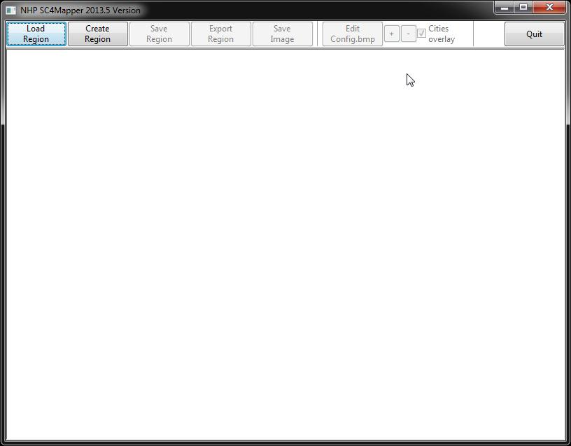
|
This is the main screen of SC4Mapper.
You can see the top bar buttons, where you can either
Load a region from one you have in your SimCity 4 folder to export it
Create a region from an external source file
|
Loading a region
|
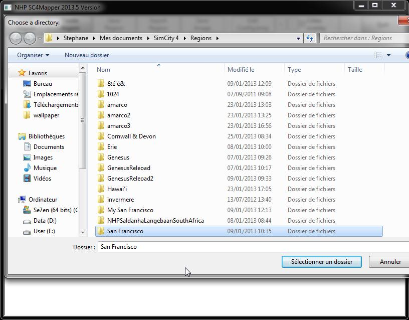
So let's load the San Fransisco region from SC4
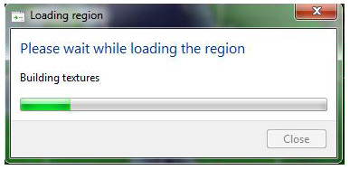
You'll have to wait while loading the whole region
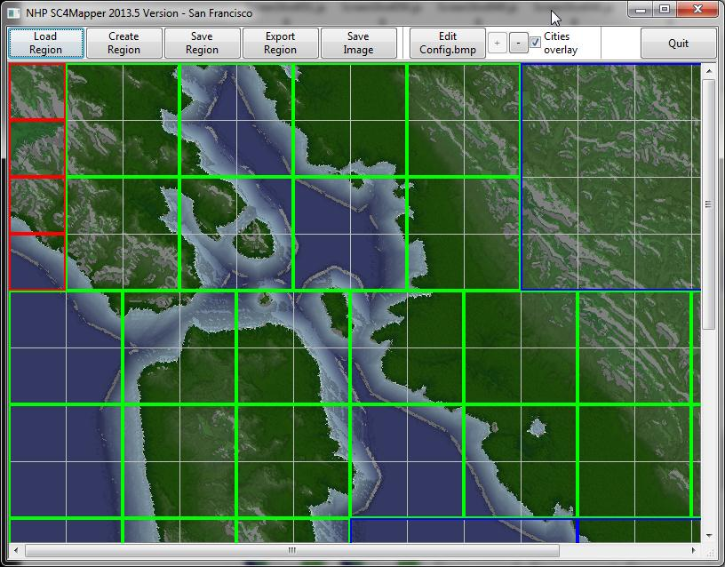
And here is the SF region loaded, with the layout of the cities on top of it
You see that you can scroll the window or enlarge it to get a better view
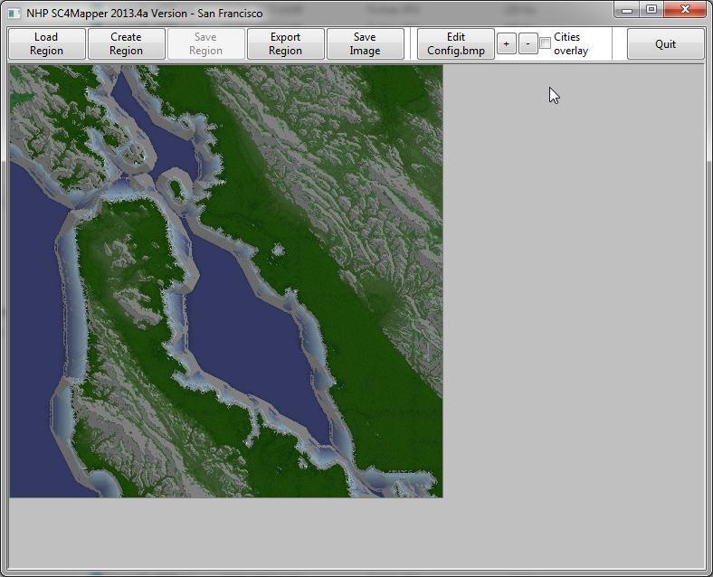
You can also zoom in/out and hide the cities overlay
You can also see that more buttons on top menu are now enable
If you choose Export region you will be prompt for a destination file
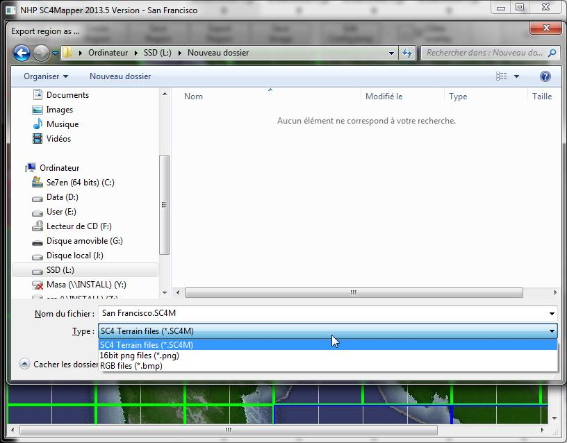
So some explanations are needed here about the differents export formats
SC4M is the file format that was made for having a 0.1m precision when exporting the region in SC4Terraformer. The SC4M not only store the elevations of your region, but also store the config.bmp used, and can store a HTML file that will be display when another user will import it
PNG is the only 16 bit greyscale file format that can be read/write by Photoshop CS. This was originaly made for allow people to use image editors to edit the region.
RGB is a normal RGB format, exactly BMP, that store the elevation following a specific scheme. It was made to get around the limitation of the 16 bit png that only Photoshop CS can read/write.
If you choose to export as SC4M, you will be prompt for a HTML file that will be included into the SC4M and displayed to the user when importing.
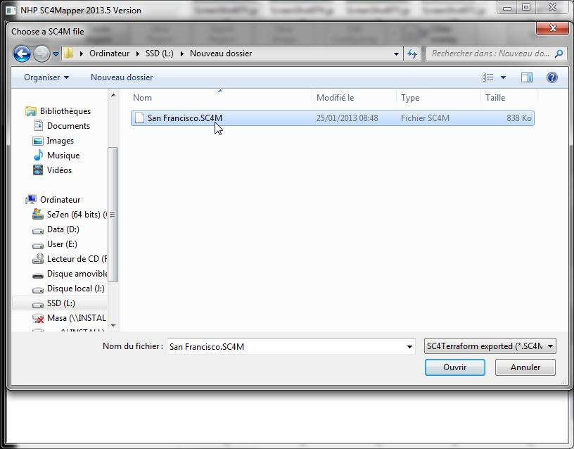
You should enter an existing html file. or cancel to avoid including any html file
If everything is ok, you should see the following messagebox
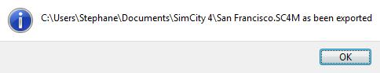
Remember that the SC4M was specially designed to share your region at verious Exchanges.
The format include the config.bmp, so no need to add it in your upload
The format compress quite well, and when you will zip it to upload to any Exchange you won't see any gain
The PNG and RGB export format are available for authoring usage as you can edit them in any image editor that support them.
|
Creating a region
|
When you click on Create Region you will be prompt to choose from what file format you want to import
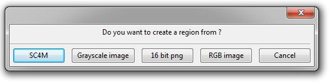
The greyscale format is for creating a region from 8 bits greyscale image ( jpgs as found in the STEX )
If you choose to create a region from a SC4M
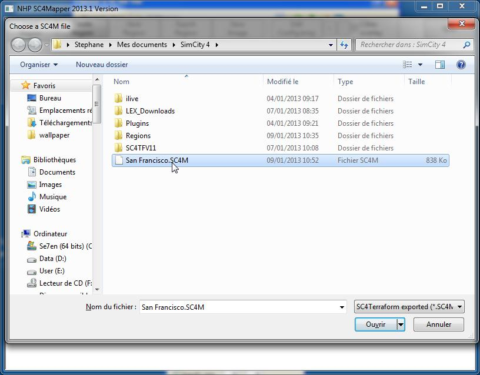
You will be prompt for a SC4M file, and the region will be created ( you may have to wait few seconds in order to the application to generate to colors )
An HTML file might be displayed if included in the SC4M
If you choose to create a region from Greyscale
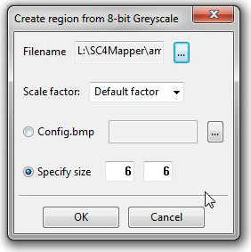
You will have to indicate the image file
You can either specify a config.bmp or specify the size of the region in small city units, in this case the region will include the most big cities it can, then medium and at last small cities
Note: The size of the region will be automatically computed when you enter the picture or the config.bmp
Note: You can change the region size to not match the picture file, in this case SC4Mapper will ask you to confirm
As 8 bits pictures don't contain enougth information to represent a correct range of elevation, you can specify how much a change of 1 unit in grey will result in SC4
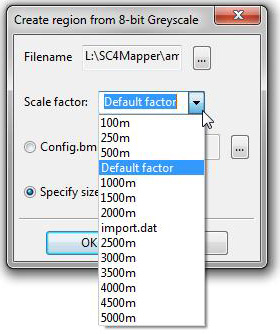
SC4Mapper includes the most commons factors used in terrain mods. See the description of the map you download to know which scale factor to use
You can also specify a real number instead of the predifined values
Creating region from 16 bits png or RGB pictures will follow the same process whitout the scale factor question.
|
Saving a created region
|
Once you have created the region, you will have to Save Region or else you won't be able to play the region in SC4
 Give a name to the new region - SC4Mapper will create a subfolder with this name in your regions folder
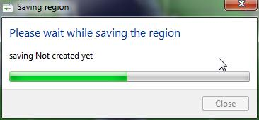
Wait while the region is saving
Give a name to the new region - SC4Mapper will create a subfolder with this name in your regions folder
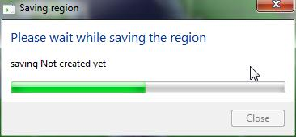
Wait while the region is saving
|
In place Config.bmp edition
|
 Press the 'Edit config' button to enter the config editor
New buttons appears in the top toolbar:
Small City : you will be able to create small cities
Medium City : you will be able to create medium cities
Big City : you will be able to create big cities
Erase City : you will be able to remove a city ( usually for ocean )
Revert config : revert to the original config.bmp
Press the 'Edit config' button to enter the config editor
New buttons appears in the top toolbar:
Small City : you will be able to create small cities
Medium City : you will be able to create medium cities
Big City : you will be able to create big cities
Erase City : you will be able to remove a city ( usually for ocean )
Revert config : revert to the original config.bmp
To exit the config editor, just untoggle the 'Edit config' button
To change city size:
select the size you want be clicking on the wanted button
move the mouse at the desired position
a blue rectangle of the size will be displayed
clic at the desired position
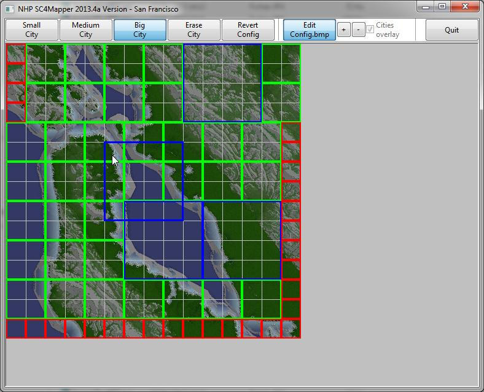
I want to add a big city at the blue place
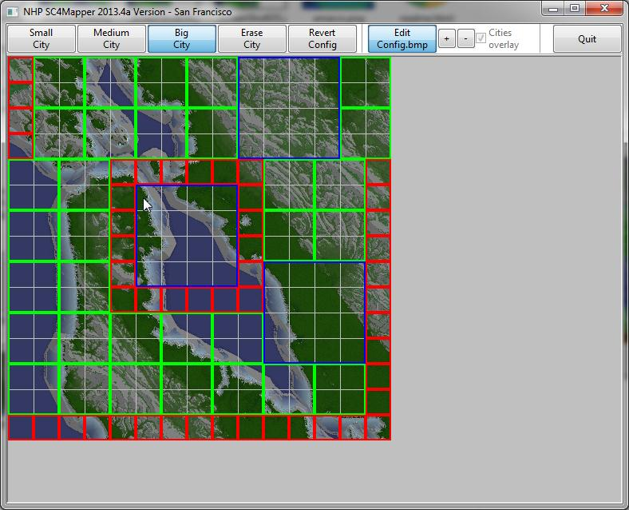
After I clicked the new city is created and the surrounding cities have been changed accordingly
To remove a city:
clic the 'erase city' button
move the mouse on the desired city
a hashcrossed rectangle will be displayed
clic on the city
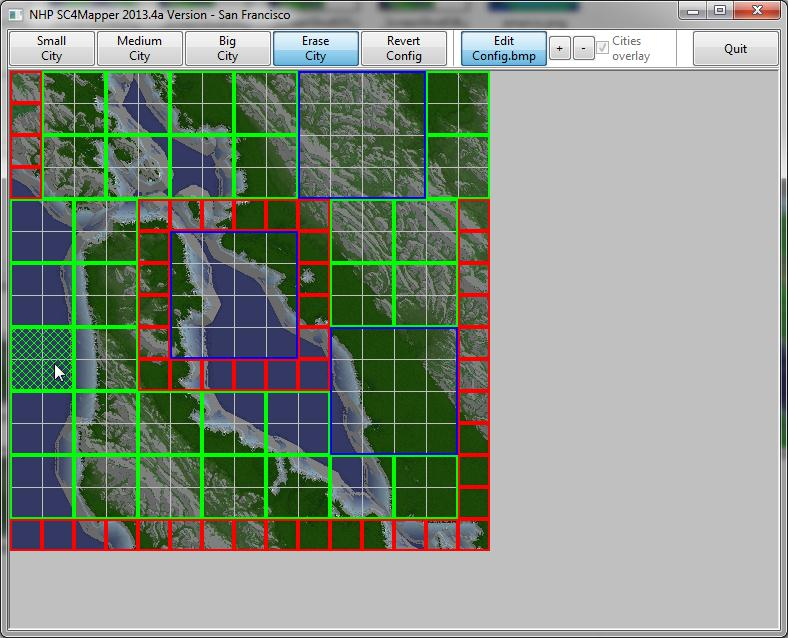
I want to add a remove the city at green hashcrossed place
 After I clicked the city has been removed and a black square is displayed
After I clicked the city has been removed and a black square is displayed
But wait there is even more!!!
What about getting only the most interesting part of a region ?
 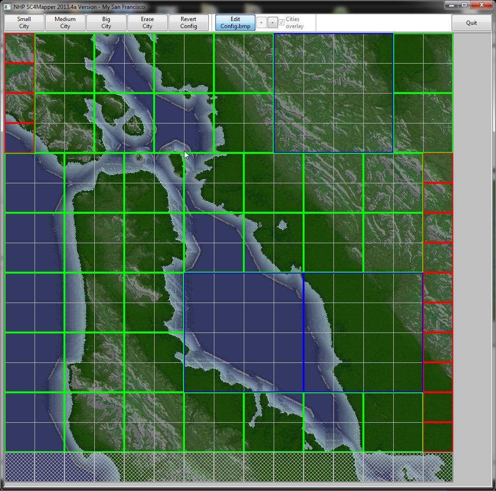
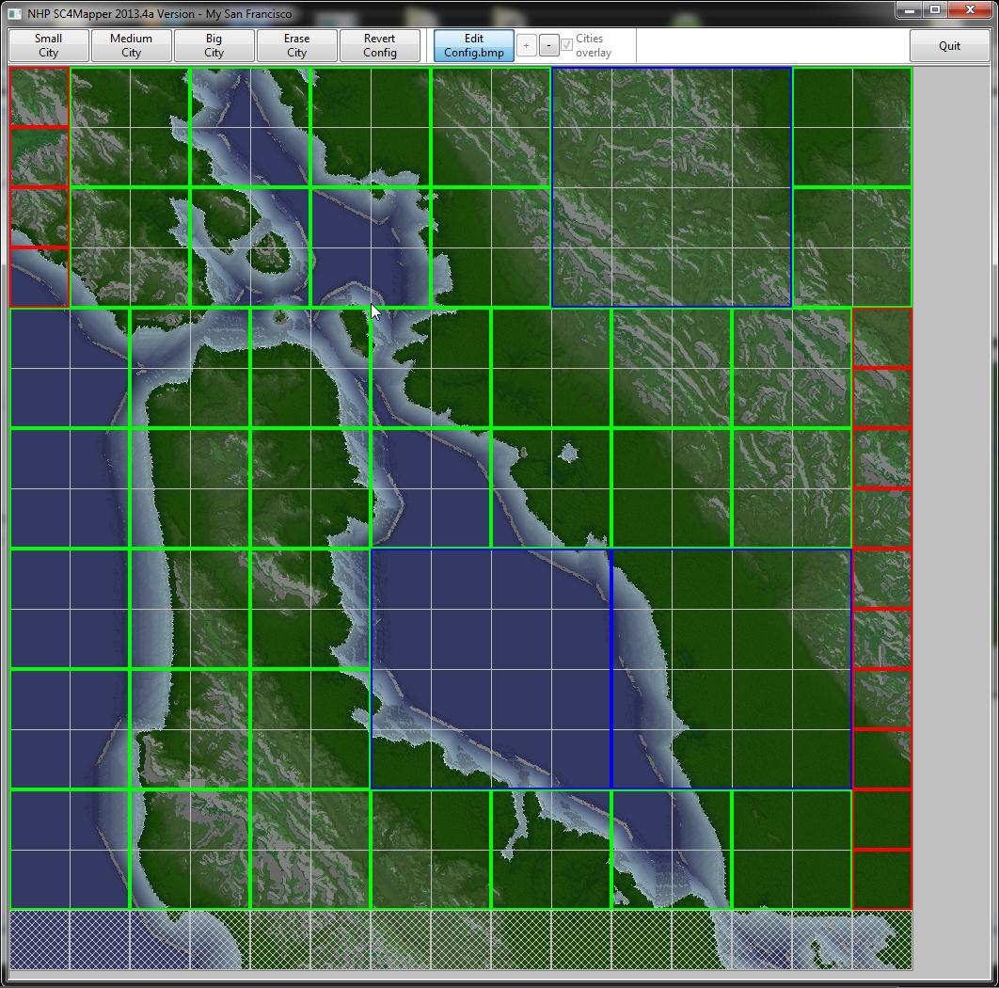
Let's erase the whole last row of cities from the config
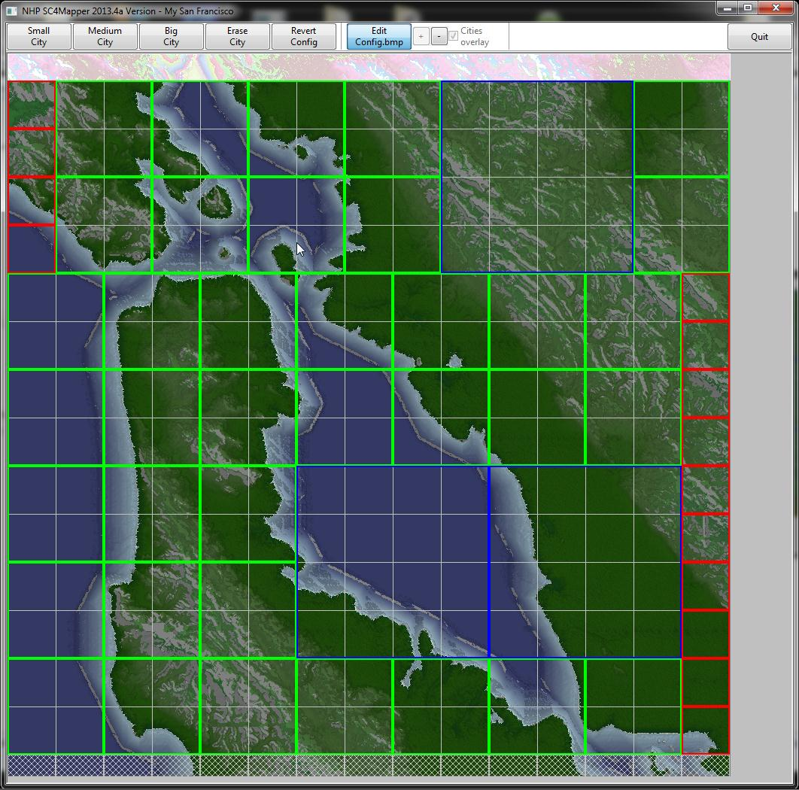
And now with CTRL and the down arrow key you can move the config overlay to get the exact region you want !!!
Of course you can move in any direction provided there is space to move !
And you can even speed up the process by just getting a specific part !
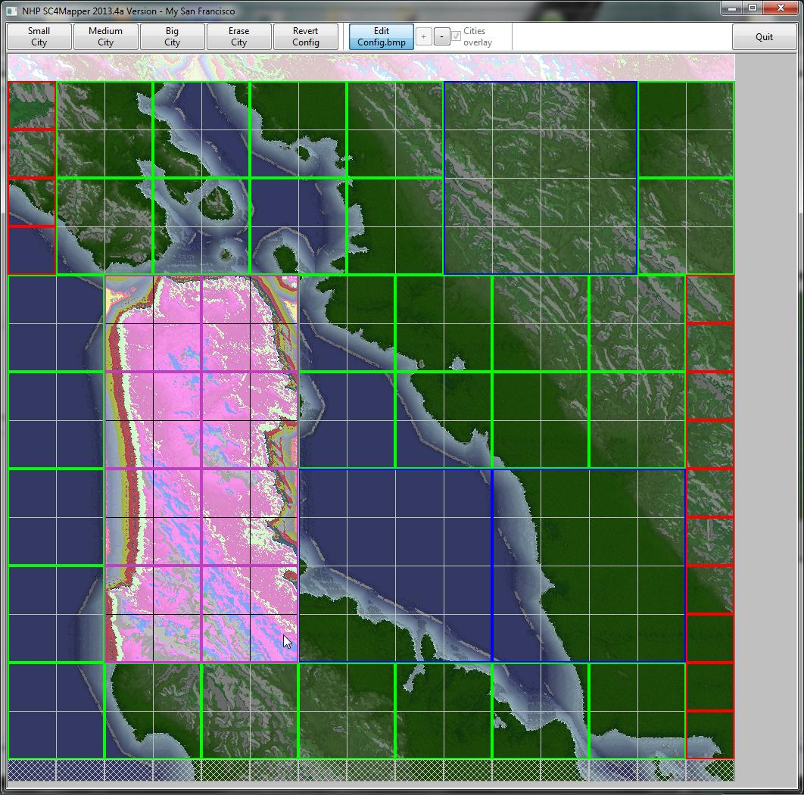
By pressing CTRL and dragging around the cities you want
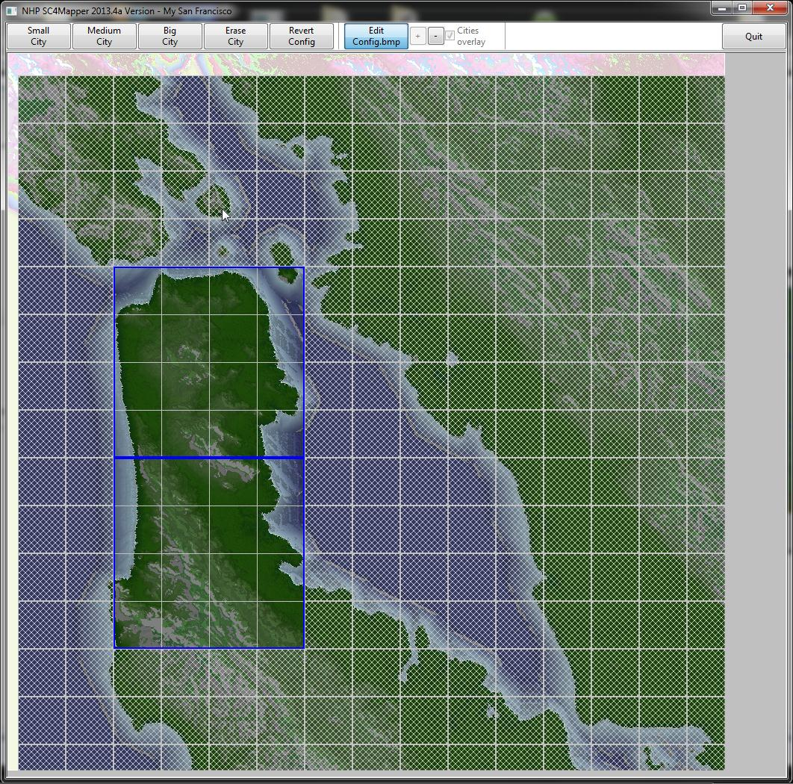
You can have the exact part you want to play on!
Upon saving or export, only the non crossed hatched part of the region will be saved
|
This conclude the tour of SC4Mapper
|
Annexe : RGB Scheme
|
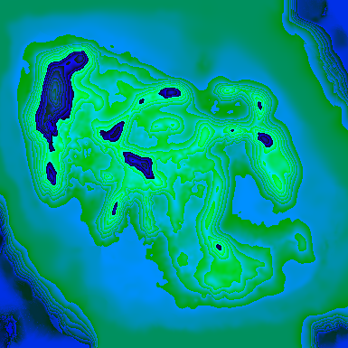
This is the RGB file from one map I released in the NHP Islands Maps Pack 01
The RGB scheme retains the 0.1m precision by using the following rules:
the blue channel can increment by one unit, one unit increment represent 0.1m
the green channel increment by 16 units, one 16 unit increment represent 25.6m
the red channel increment by 16 units, one 16 unit increment represent 409.6m
|